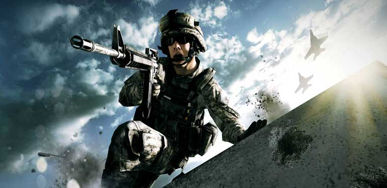

¿Que Son Los Shooters?
son un genero que engloban un amplio numero de subgeneros que tienen la caracteristica comun de permitir controlar un personaje que, por norma general, dispone de un arma (mayoritariamente de fuego) que puede ser disparada a voluntad.
Sus Tipos De Perspectiva
El jugador puede ver disparos en primera persona (first person shooter) o desde una camara que sigue al personaje por la espalda desde una cierta distancia y elevacion (tercera persona). Tambien es posible (aunque poco frecuente en el género) encontrar juegos que disponen de una camara fija.
(Haga Click En La Imagen Para Entrar A lA Pagina Oficcial De Activision)
